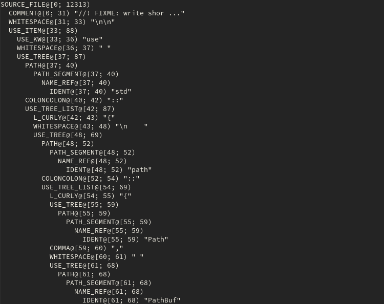
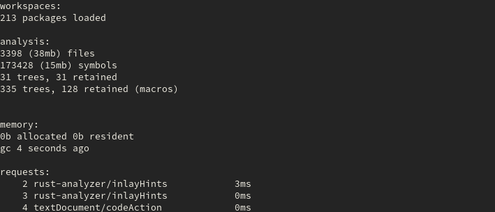
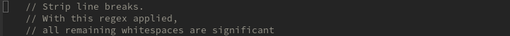
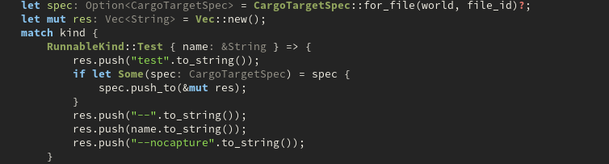
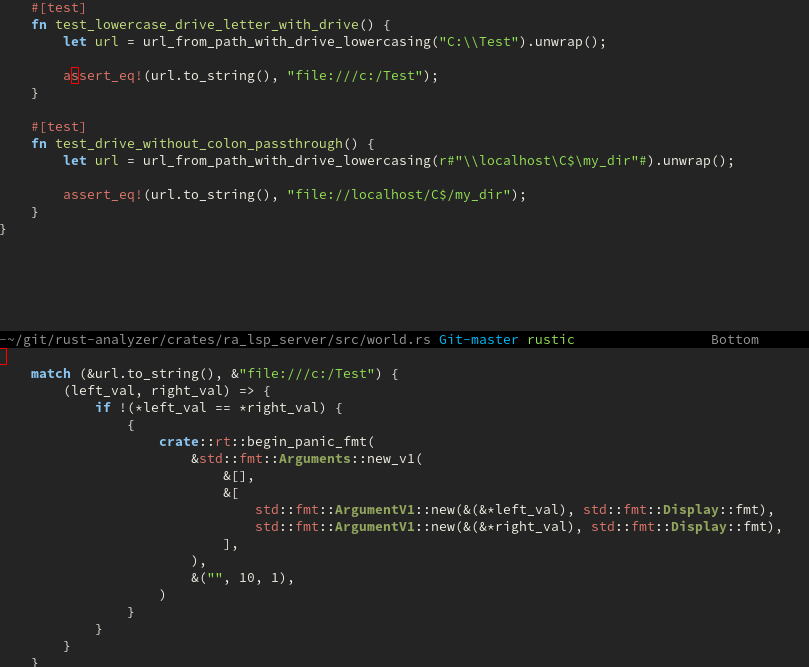
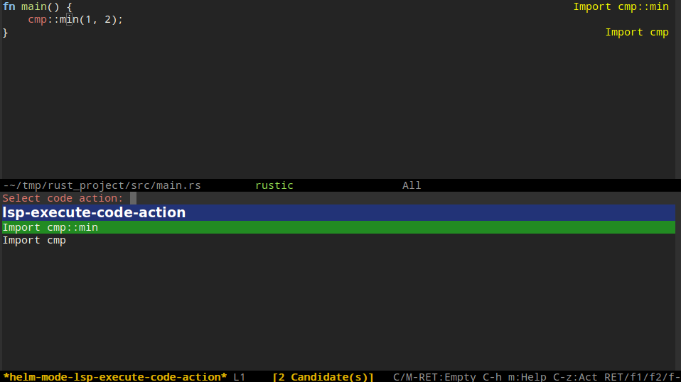

Rust#
Server#
For more information about the LSP server, check rust-analyzer.
Installation#
For more instructions on how to install manually, check here.
Debugger: Not available#
Server note#
NOTE: If you are using rustic-mode, you have to change rustic-lsp-server instead of lsp-rust-server, since it also supports eglot as a lightweight alternative to lsp-mode.
-
lsp-rust-serverChoose LSP server (default is rust-analyzer) -
lsp-rust-switch-serverSwitch priorities of lsp servers
rust-analyzer#
Commands#
lsp-rust-analyzer-syntax-tree#
Display syntax tree for current buffer

lsp-rust-analyzer-status#
Display status information for rust-analyzer

lsp-rust-analyzer-join-lines#
Join selected lines into one, smartly fixing up whitespace and trailing commas
before:

after:
inlay-hints#
lsp-rust-analyzer-inlay-hints-mode enables displaying of inlay hints
Additionally, lsp-rust-analyzer-server-display-inlay-hints must be set to t in order for inlay hints to render.
NOTE: the inlay hints interact badly with the lsp-ui sideline, because it doesn't seem to consider the overlays in its width calculation, which often leads to lines wrapping around.

Macro expansion#
lsp-rust-analyzer-expand-macro expand macro call at point recursively
Use your own function for displaying macro expansion by customizing lsp-rust-analyzer-macro-expansion-method
Formatted and highlighted result with the default function of rustic.

auto-import#
Get a list of possible auto import candidates with lsp-execute-code-action

Snippet insertion/refactor#
To support refactorings that require snippet insertion(eg. generating
derive clause etc), make sure that you have enabled yasnippet and
yas-minor-mode. If you are using use-package, you can do something
like this:
(use-package yasnippet
:ensure t
:hook ((lsp-mode . yas-minor-mode)))
Open Cargo.toml#
lsp-rust-analyzer-open-cargo-toml opens the Cargo.toml closest to the current file. Calling it with a universal argument will open the Cargo.toml in another window.
Corresponds to the rust-analyzer LSP extension

Open external documentation#
lsp-rust-analyzer-open-external-docs opens external documentation related to the current position in a browser.
Corresponds to the rust-analyzer LSP extension
Find and execute tests related to current position#
lsp-rust-analyzer-related-tests find all tests related to the current position, asks for user completion and executes the selected test in a compilation buffer.
Corresponds to the rust-analyzer LSP extension
In the example below, first you see that:
+ On the left, the function check_infer is defined, on the right another
file is opened with many test functions, some of which call check_infer.
With the cursor on check_infer, call lsp-rust-analyzer-related-tests
and select infer_pattern_match_slice with fuzzy matching. The test is
executed on the right with compilation major mode
- Move the cursor to
fn ellipsizeand attempt to find related tests to no avail. Confirm that the function is indeed untested by using swiper and finding one place in the file, where the function is called

Caveats#
- Rust Analyzer does not support disabling snippets - https://github.com/rust-analyzer/rust-analyzer/issues/2518
extract signature#
This unmerged PR contains an example method that allows modifying the signature that is displayed by eldoc.
TRAMP Example#
The following is an example configuration for using lsp-mode with a remote rust-analyzer server:
(with-eval-after-load "lsp-rust"
(lsp-register-client
(make-lsp-client
:new-connection (lsp-tramp-connection "rust-analyzer")
:remote? t
:major-modes '(rust-mode rustic-mode)
:initialization-options 'lsp-rust-analyzer--make-init-options
:notification-handlers (ht<-alist lsp-rust-notification-handlers)
:action-handlers (ht ("rust-analyzer.runSingle" #'lsp-rust--analyzer-run-single))
:library-folders-fn (lambda (_workspace) lsp-rust-library-directories)
:after-open-fn (lambda ()
(when lsp-rust-analyzer-server-display-inlay-hints
(lsp-rust-analyzer-inlay-hints-mode)))
:ignore-messages nil
:server-id 'rust-analyzer-remote)))
Available configurations#
lsp-rust-server#
Type: (choice (const :tag rls rls) (const :tag rust-analyzer rust-analyzer))
Default: rust-analyzer
Choose LSP server.
lsp-rust-analyzer-call-info-full#
Type: boolean
Default: t
Whether to show function name and docs in parameter hints.
lsp-rust-analyzer-cargo-all-targets#
Type: boolean
Default: t
Cargo watch all targets or not.
lsp-rust-analyzer-cargo-auto-reload#
Type: boolean
Default: t
Automatically refresh project info via cargo metadata on Cargo.toml changes.
lsp-rust-analyzer-cargo-override-command#
Type: lsp-string-vector
Default: []
Advanced option, fully override the command rust-analyzer uses for checking.
The command should include --message=format=json or similar option.
lsp-rust-analyzer-cargo-run-build-scripts#
Type: boolean
Default: t
Whether to run build scripts (build.rs) for more precise code analysis.
lsp-rust-analyzer-cargo-unset-test#
Type: lsp-string-vector
Default: []
force rust-analyzer to unset #[cfg(test)] for the specified crates.
lsp-rust-analyzer-cargo-watch-args#
Type: lsp-string-vector
Default: []
Cargo watch args.
lsp-rust-analyzer-cargo-watch-command#
Type: string
Default: check
Cargo watch command.
lsp-rust-analyzer-cargo-watch-enable#
Type: boolean
Default: t
Enable Cargo watch.
lsp-rust-analyzer-completion-add-call-argument-snippets#
Type: boolean
Default: t
Whether to add argument snippets when completing functions.
lsp-rust-analyzer-completion-add-call-parenthesis#
Type: boolean
Default: t
Whether to add parenthesis when completing functions.
lsp-rust-analyzer-completion-auto-import-enable#
Type: boolean
Default: t
Toggles the additional completions that automatically add imports when
completed. lsp-completion-enable-additional-text-edit must be non-nil
for this feature to be fully enabled.
lsp-rust-analyzer-completion-auto-self-enable#
Type: boolean
Default: t
Toggles the additional completions that automatically show method calls and field accesses with self prefixed to them when inside a method.
lsp-rust-analyzer-completion-postfix-enable#
Type: boolean
Default: t
Whether to show postfix snippets like dbg, if, not, etc.
lsp-rust-analyzer-debug-lens-extra-dap-args#
Type: plist
Default: (:MIMode gdb :miDebuggerPath gdb :stopAtEntry t :externalConsole :json-false)
Extra arguments to pass to DAP template when debugging a test from code lens.
As a rule of the thumb, do not add extra keys to this plist unless you exactly what you are doing, it might break the "Debug test" lens otherwise.
See dap-mode documentation and cpptools documentation for the extra variables meaning.
lsp-rust-analyzer-diagnostics-disabled#
Type: lsp-string-vector
Default: []
List of native rust-analyzer diagnostics to disable.
lsp-rust-analyzer-diagnostics-enable#
Type: boolean
Default: t
Whether to show native rust-analyzer diagnostics.
lsp-rust-analyzer-diagnostics-enable-experimental#
Type: boolean
Default: t
Whether to show native rust-analyzer diagnostics that are still experimental (might have more false positives than usual).
lsp-rust-analyzer-diagnostics-warnings-as-hint#
Type: lsp-string-vector
Default: []
List of warnings that should be displayed with hint severity.
lsp-rust-analyzer-diagnostics-warnings-as-info#
Type: lsp-string-vector
Default: []
List of warnings that should be displayed with info severity.
lsp-rust-analyzer-display-chaining-hints#
Type: boolean
Default: nil
Whether to show inlay type hints for method chains.
lsp-rust-analyzer-display-parameter-hints#
Type: boolean
Default: nil
Whether to show function parameter name inlay hints at the call site.
lsp-rust-analyzer-download-url#
Type: string
Default: https://github.com/rust-analyzer/rust-analyzer/releases/latest/download/rust-analyzer-x86_64-unknown-linux-gnu.gz
Automatic download url for Rust Analyzer
lsp-rust-analyzer-exclude-dirs#
Type: lsp-string-vector
Default: []
These directories will be ignored by rust-analyzer.
lsp-rust-analyzer-exclude-globs#
Type: lsp-string-vector
Default: []
Exclude globs
lsp-rust-analyzer-experimental-proc-attr-macros#
Type: boolean
Default: nil
Whether to enable experimental support for expanding proc macro attributes.
lsp-rust-analyzer-highlighting-strings#
Type: boolean
Default: t
Use semantic tokens for strings.
lsp-rust-analyzer-import-enforce-granularity#
Type: boolean
Default: nil
Whether to enforce the import granularity setting for all files. If set to nil rust-analyzer will try to keep import styles consistent per file.
lsp-rust-analyzer-import-granularity#
Type: (choice (const crate :doc Merge imports from the same crate into a single use statement. This kind of nesting is only supported in Rust versions later than 1.24.) (const module :doc Merge imports from the same module into a single use statement.) (const item :doc Don’t merge imports at all, creating one import per item.) (const preserve :doc Do not change the granularity of any imports. For auto-import this has the same effect as"item"'))`
Default: crate
How imports should be grouped into use statements.
lsp-rust-analyzer-import-group#
Type: boolean
Default: t
Group inserted imports by the following order: https://rust-analyzer.github.io/manual.html#auto-import. Groups are separated by newlines.
lsp-rust-analyzer-import-merge-behaviour#
Type: (choice (const none) (const full) (const last))
Default: full
The strategy to use when inserting new imports or merging imports. Valid values are: - "none": No merging - "full": Merge all layers of the import trees - "last": Only merge the last layer of the import trees
lsp-rust-analyzer-import-prefix#
Type: (choice (const plain) (const by_self) (const by_crate))
Default: plain
The path structure for newly inserted paths to use.
Valid values are:
- "plain": Insert import paths relative to the current module, using up to
one super prefix if the parent module contains the requested item.
- "by_self": Prefix all import paths with self if they dont begin withself,super,crateor a crate name.
- "by_crate": Force import paths to be absolute by always starting
them withcrate` or the crate name they refer to.
lsp-rust-analyzer-inlay-chain-face#
Type: face
Default: ((t :inherit lsp-rust-analyzer-inlay-face))
Face for inlay chaining hints (e.g. inferred chain intermediate types).
lsp-rust-analyzer-inlay-chain-format#
Type: (string :tag String)
Default: : %s
Format string for chain inlays (part of the inlay face).
lsp-rust-analyzer-inlay-chain-space-format#
Type: (string :tag String)
Default: %s
Format string for spacing around chain inlays (not part of the inlay face).
lsp-rust-analyzer-inlay-face#
Type: face
Default: ((t :inherit font-lock-comment-face))
The face to use for the Rust Analyzer inlays.
lsp-rust-analyzer-inlay-param-face#
Type: face
Default: ((t :inherit lsp-rust-analyzer-inlay-face))
Face for inlay parameter hints (e.g. function parameter names at call-site).
lsp-rust-analyzer-inlay-param-format#
Type: (string :tag String)
Default: %s:
Format string for parameter inlays (part of the inlay face).
lsp-rust-analyzer-inlay-param-space-format#
Type: (string :tag String)
Default: %s
Format string for spacing around parameter inlays (not part of the inlay face).
lsp-rust-analyzer-inlay-type-face#
Type: face
Default: ((t :inherit lsp-rust-analyzer-inlay-face))
Face for inlay type hints (e.g. inferred variable types).
lsp-rust-analyzer-inlay-type-format#
Type: (string :tag String)
Default: : %s
Format string for variable inlays (part of the inlay face).
lsp-rust-analyzer-inlay-type-space-format#
Type: (string :tag String)
Default: %s
Format string for spacing around variable inlays (not part of the inlay face).
lsp-rust-analyzer-lru-capacity#
Type: integer
Default: nil
Number of syntax trees rust-analyzer keeps in memory.
lsp-rust-analyzer-macro-expansion-method#
Type: function
Default: lsp-rust-analyzer-macro-expansion-default
Use a different function if you want formatted macro expansion results and syntax highlighting.
lsp-rust-analyzer-max-inlay-hint-length#
Type: integer
Default: nil
Max inlay hint length.
lsp-rust-analyzer-proc-macro-enable#
Type: boolean
Default: nil
Enable Proc macro support.
Implies lsp-rust-analyzer-cargo-run-build-scripts
lsp-rust-analyzer-rustc-source#
Type: string
Default: nil
Path to the Cargo.toml of the rust compiler workspace.
lsp-rust-analyzer-rustfmt-extra-args#
Type: lsp-string-vector
Default: []
Additional arguments to rustfmt.
lsp-rust-analyzer-rustfmt-override-command#
Type: lsp-string-vector
Default: []
Advanced option, fully override the command rust-analyzer uses for formatting.
lsp-rust-analyzer-server-command#
Type: (repeat string)
Default: (rust-analyzer)
Command to start rust-analyzer.
lsp-rust-analyzer-server-display-inlay-hints#
Type: boolean
Default: nil
Show inlay hints.
lsp-rust-analyzer-store-path#
Type: file
Default: ~/.emacs.d/.cache/lsp/rust/rust-analyzer
The path to the file in which rust-analyzer will be stored.
lsp-rust-analyzer-use-client-watching#
Type: boolean
Default: t
Use client watching
lsp-rust-analyzer-use-rustc-wrapper-for-build-scripts#
Type: boolean
Default: t
Use RUSTC_WRAPPER=rust-analyzer when running build scripts to avoid
compiling unnecessary things.